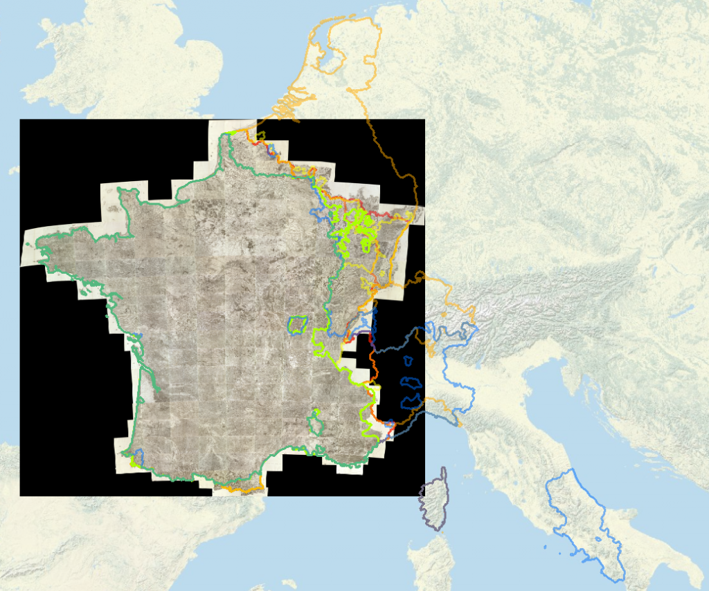

I’m happy David Rumsey was asked to open up this year’s Digital Humanities conference because it gave me a chance to personally thank him for making my work, and the work any scholar who needs historical maps from the periods and regions that Rumsey collects, so much more achievable. For those not in the know, David Rumsey is a map collector and digital innovator who has gathered and made available over 25,000 high-quality, often georectified, historical maps. I’ve used these maps as base layers for Authorial London and my work on Mapping the Republic of Letters as well as in collaboration with graduate students and faculty across Stanford.


Rumsey's Cassini map of France, built out of multiple high-resolution tiles created during the 18th and early 19th centuries, is half a gigabyte as a MrSID and 22GB as a Tiff. It's georectified and freely available from Rumsey's site, though good luck getting it into your Geoserver.
Rumsey’s rigor and drive and especially his willingness to make his maps freely available to anyone who wants them at whatever resolution they want would be enough to establish him as one of the most useful resources for historical GIS scholarship. In fact, during his keynote David noted that he tried so hard to give his maps away that Google’s algorithms started to think Rumsey was a scraper of his own maps. But he’s done so much more than provide the community with a wide range of high-quality historical images.
Rumsey has provided critical support for the digitization of massive and historically important cartographic surveys such as the Cassini map above and the upcoming equivalent for late 19th century Germany as well as supporting critical geography such as that done by Alexander Akin in his georectification and analysis of the 1136 map of China known as the Yujitu. But he’s also turned his efforts toward representation of the maps and the worlds presented on those maps in virtual environments and innovative web-based catalogs.
David Rumsey has donated his entire collection to Stanford University and we’re lucky in that we’re not only receiving the maps but also his innovation and his inspiration to continue to develop novel and sophisticated methods of presenting historical space and the cartographic resources that represent it.